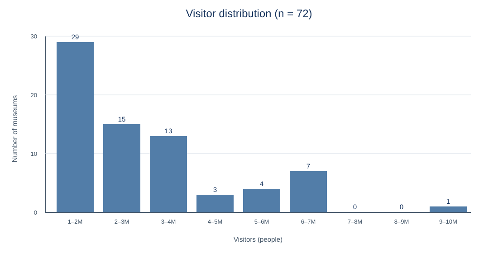
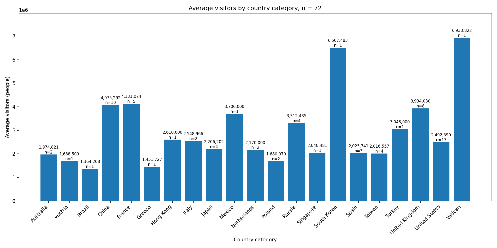

문제 · 데이터 · 운영 판단
방문객 수와 국가 조건으로 미술관 후보를 좁히고, 후보 안에서 AI 추천을 제공하는 비교 서비스
운영진과 회원은 여러 나라의 미술관을 방문객 수와 국가 조건으로 비교한다. 목록을 직접 찾아야 하는 부담을 줄이기 위해 조건에 맞는 후보를 먼저 보여 주고, 후보 안에서 AI가 한 곳을 제안하도록 했다.
| 항목 | 내용 |
|---|---|
| 출처 | Wikipedia List of most-visited museums |
| 수집·행 수 | 2026-09-28 · 원본 72 → 정제 72 · 빈 행 0 |
| 정제 규칙 | 방문객 수의 쉼표·단위를 제거해 정수 visitors로 변환 · 국가명 공백 정리 |
| 원문 대조 | 표본 3곳 중 3곳 일치 |


쓰임 국가 평균은 규모 비교용 참고값이며, 개별 추천은 후보별 실제 방문객 수와 국가 데이터를 사용한다. Wikipedia 한 페이지의 72곳이므로 전체 미술관 분포로 일반화하지 않는다.
| 구분 | 적용 내용 |
|---|---|
| 필터 | 국가와 최소 방문객 수로 후보를 거르고, 후보 0개면 AI를 호출하지 않는다. |
| AI 범위 | 최대 5개 후보의 이름·방문객 수·국가만 전달한다. 후보 밖 이름, 새 숫자, 표에 없는 정보는 금지한다. |
| 결정 규칙 | 후보 중 방문객 수가 가장 적어 조건 경계에 가까운 곳부터 판단하도록 지침을 제한한다. |
| 검증·보안 | 서버가 추천 후보의 이름·방문객 수·국가를 data/data.json과 다시 대조하고, API 키는 Vercel 환경변수로 관리한다. |
| 실패 처리 | 입력 오류·후보 0개·API 한도·상위 API 오류를 구분해 안내하며, 후보 밖 결과는 카드에 반영하지 않는다. |
apply_filter, get_recommendation, select_item 이벤트를 구성했다.select_item 1회 도착을 확인했다.select_item 1회는 도착 증거이지 회원 전체의 전환율은 아니다.select_item 비율을 관찰한다.| 순서 | 명령 | 만드는 것 | 상태 |
|---|---|---|---|
| 1 | python scripts/02_collect.py | data/raw.csv | 확인 안 함 |
| 2 | python scripts/03_clean.py | data/clean.csv | 확인 안 함 |
| 3 | python scripts/05_hist.py | charts/hist.png | 확인 안 함 |
| 4 | python scripts/06_by_category.py | charts/by_category.png | 확인 안 함 |
| 5 | python scripts/07_export_json.py | data/data.json | 확인 안 함 |